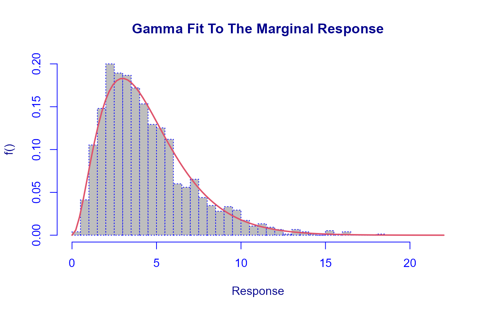
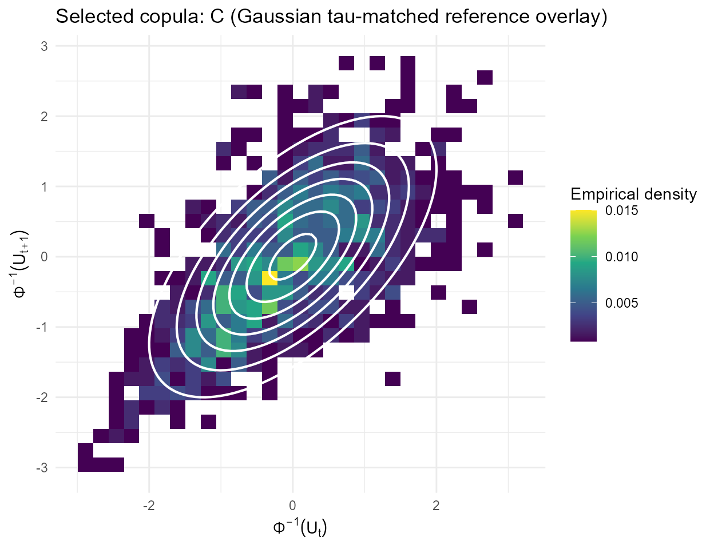
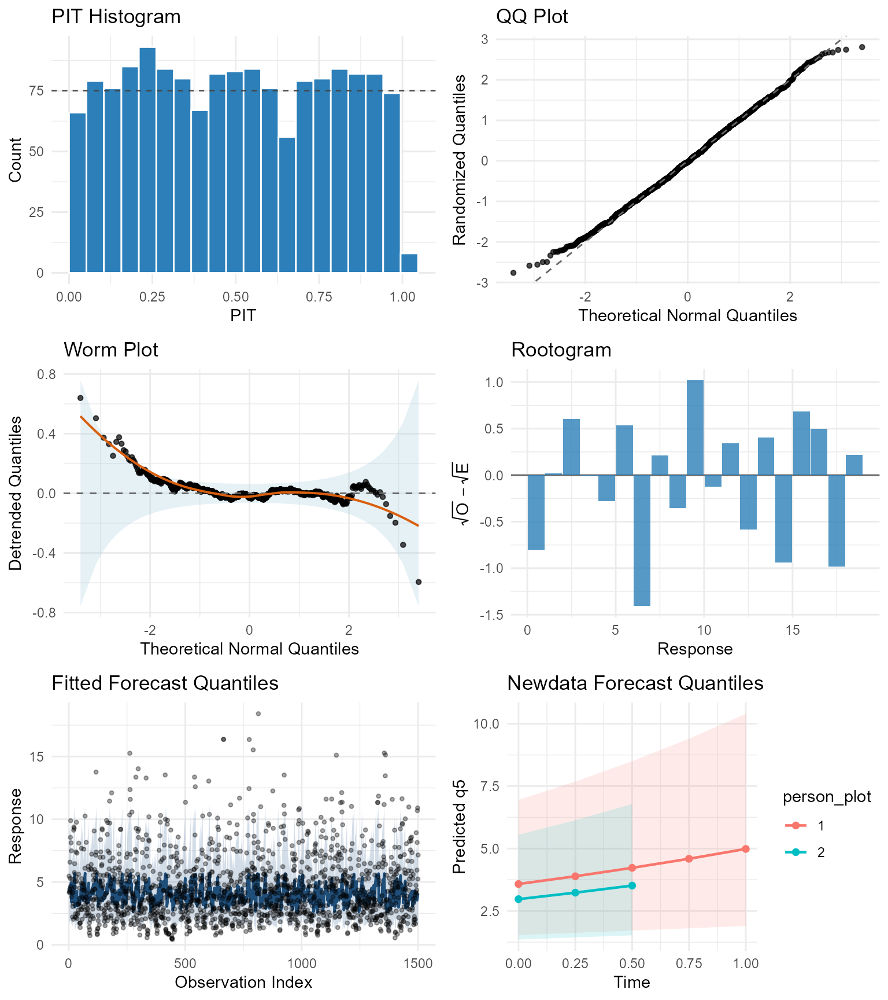
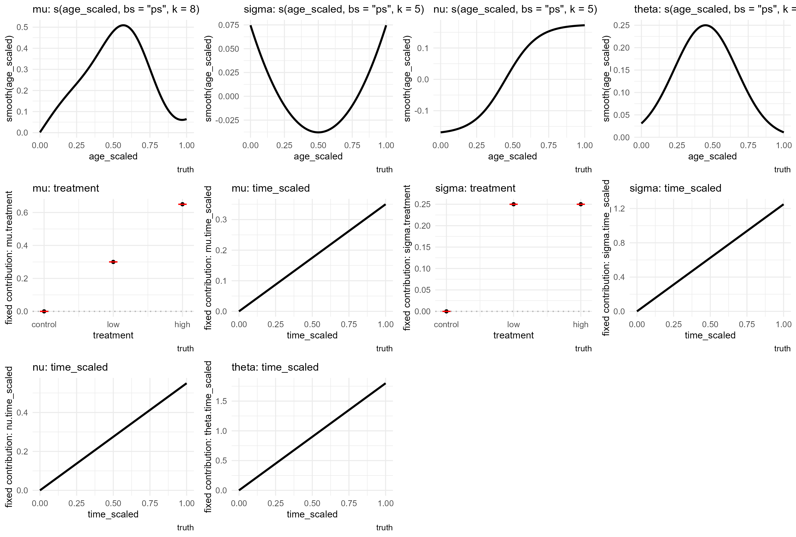
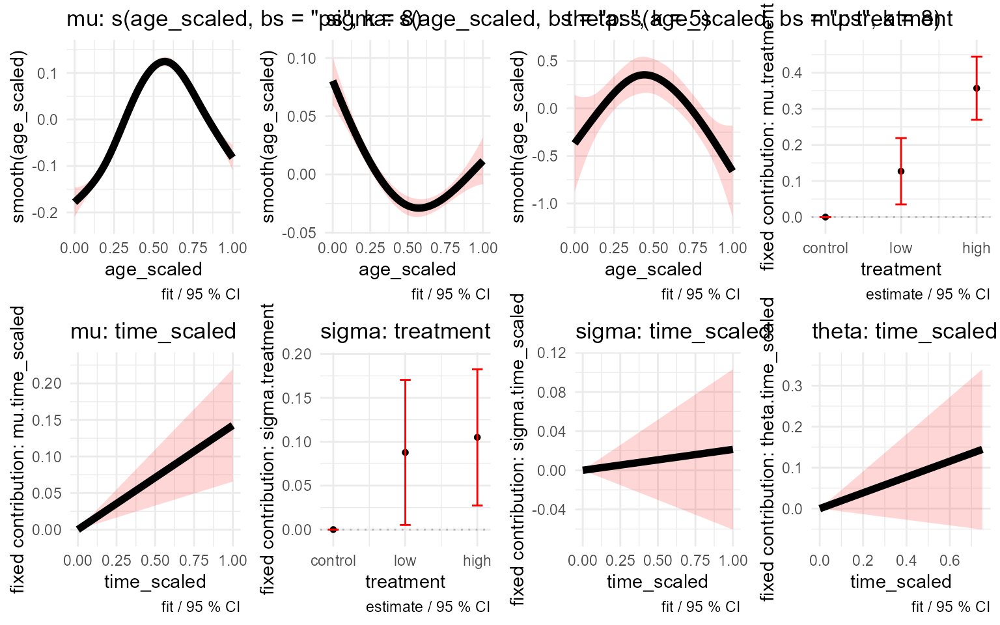
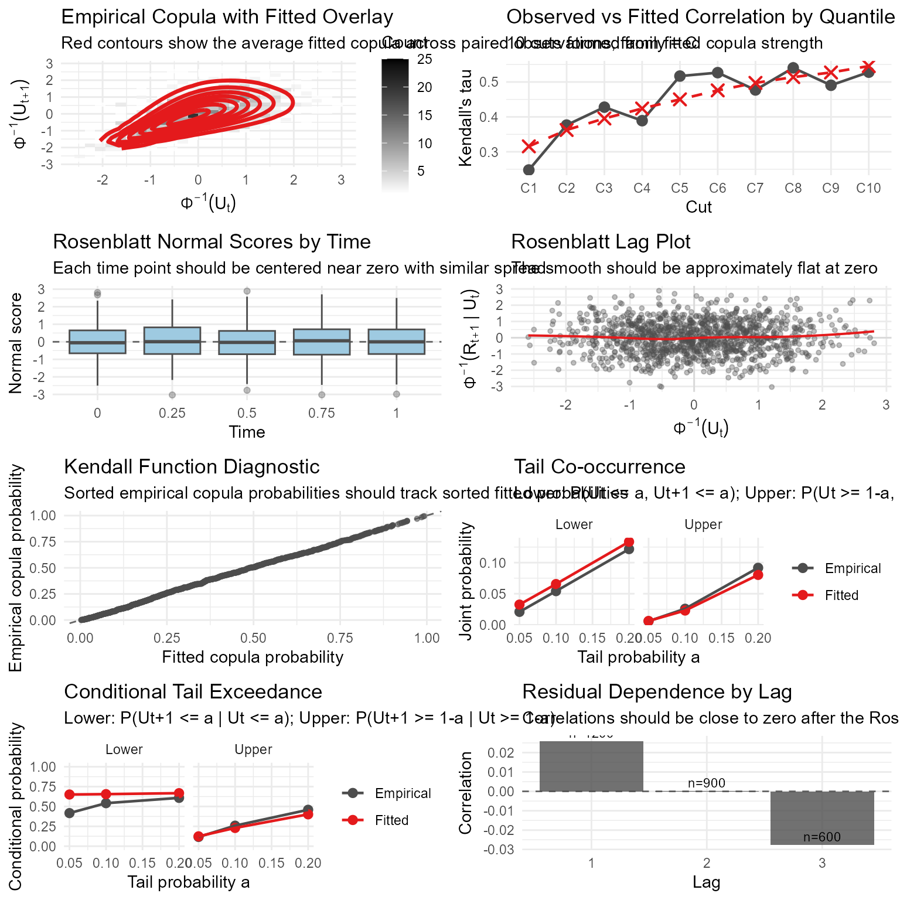

Native Simulation, Copula Screening, and GAMLSS Longitudinal Fitting
Source:vignettes/native-simulation-workflow.Rmd
native-simulation-workflow.RmdThis vignette shows an end-to-end workflow for simulated longitudinal data with GAMLSS margins and native copula dependence. The example is simulated so that we can compare the fitted model with the known truth, but the same workflow is intended to mirror a real analysis:
- simulate or load longitudinal data,
- inspect the marginal response and pairwise dependence,
- choose a marginal distribution,
- screen candidate copula families,
- fit the longitudinal model,
- inspect model, term, and copula diagnostics.
Simulate Data
We simulate a balanced dataset with 300 subjects and 5 time points. The response is Gamma distributed. Each subject has:
- a three-level treatment group:
control,low, orhigh; - a subject-level age generated uniformly between 25 and 70;
- a repeated observation time scaled to
[0, 1].
The marginal mean has treatment, time, and nonlinear age effects. The marginal scale has treatment, time, and a simple U-shaped age effect. The dependence structure is Clayton, with its parameter varying smoothly with age and linearly with time.
set.seed(20260521)
n_subject <- 300
time_points <- seq(0, 1, length.out = 5)
treatment_effect <- c(control = 0, low = 0.20, high = 0.45)
truth_mu_age_smooth <- function(x) {
sim_smooth_bump(x, amplitude = 0.45, location = 0.62, width = 0.18) +
sim_smooth_sin(x, amplitude = 0.12)
}
truth_sigma_age_smooth <- function(x) {
sim_smooth_u(x, amplitude = 1.00)
}
truth_theta_age_smooth <- function(x) {
sim_smooth_bump(x, amplitude = 0.55, location = 0.45, width = 0.22)
}
dat <- simulate_longitudinal_dataset(
n = n_subject,
times = time_points,
margin_dist = GA(mu.link = "log", sigma.link = "log"),
copula_dist = "C",
covariates = function(base) {
simulate_longitudinal_covariates(
base,
subject = list(
treatment = function(subject_data) {
factor(
sample(c("control", "low", "high"), nrow(subject_data), replace = TRUE),
levels = c("control", "low", "high")
)
},
age = function(subject_data) stats::runif(nrow(subject_data), 25, 70)
),
observation = list(
time_scaled = function(long_data) sim_rescale01(long_data$time)
)
)
},
margin_params = list(
mu = function(d) {
age_scaled <- sim_rescale01(d$age)
eta_mu <- 1.00 +
sim_factor_effect(d$treatment, treatment_effect) +
0.20 * d$time_scaled +
truth_mu_age_smooth(age_scaled)
exp(eta_mu)
},
sigma = function(d) {
age_scaled <- sim_rescale01(d$age)
eta_sigma <- -0.75 +
0.12 * sim_factor_effect(d$treatment, c(control = 0, low = 1, high = 1)) +
0.10 * d$time_scaled +
truth_sigma_age_smooth(age_scaled)
exp(eta_sigma)
}
),
copula_params = list(
theta = function(e) {
age_scaled <- sim_rescale01(e$age)
time_left_scaled <- sim_rescale01(e$time_left)
eta_theta <- 0.05 +
0.20 * time_left_scaled +
truth_theta_age_smooth(age_scaled)
exp(eta_theta)
}
),
seed = 20260521
)
dat$age_scaled <- sim_rescale01(dat$age)
head(dat)
#> subject time response treatment age time_scaled u true_mu
#> 1 1 0.00 5.469907 high 67.78847 0.00 0.7081970 4.465262
#> 2 1 0.25 4.210676 high 67.78847 0.25 0.5138537 4.694201
#> 3 1 0.50 4.157061 high 67.78847 0.50 0.4801521 4.934878
#> 4 1 0.75 4.426001 high 67.78847 0.75 0.4922706 5.187894
#> 5 1 1.00 6.579618 high 67.78847 1.00 0.6955325 5.453883
#> 6 2 0.00 2.147849 low 37.49718 0.00 0.1770005 4.021825
#> true_sigma true_theta true_zeta age_scaled
#> 1 0.5999732 NA NA 0.9533162
#> 2 0.6151616 1.094351 0 0.9533162
#> 3 0.6307345 1.169794 0 0.9533162
#> 4 0.6467016 1.250439 0 0.9533162
#> 5 0.6630729 1.336643 0 0.9533162
#> 6 0.5133536 NA NA 0.2773443Inspect The Response
plotDist() gives a compact view of the marginal response
distribution at each time point and the pairwise dependence between time
points. The off-diagonal panels use pseudo-observations here, so the
dependence pattern is shown on a copula scale.

Choose A Marginal Distribution
For positive continuous responses, gamlss::fitDist() is
a useful marginal screen. It does not account for longitudinal
dependence, so it should be treated as a guide rather than as the final
model choice.
margin_screen_fits <- data.frame(
family = names(margin_screen$fits),
AIC = as.numeric(margin_screen$fits),
row.names = NULL
)
head(margin_screen_fits, 10)
#> family AIC
#> 1 GIG 6700.166
#> 2 GG 6702.249
#> 3 BCPE 6702.677
#> 4 BCPEo 6702.677
#> 5 BCCGo 6702.740
#> 6 BCCG 6702.740
#> 7 GB2 6704.272
#> 8 BCT 6704.740
#> 9 BCTo 6704.740
#> 10 GA 6717.304
best_margin <- margin_screen_fits[1, , drop = FALSE]
best_margin
#> family AIC
#> 1 GIG 6700.166The screen is marginal, and this example continues with the Gamma family because the fitted longitudinal model will handle covariates, smooth effects, and within-subject dependence.
gamlss::histDist(
dat$response,
family = GA,
nbins = 30,
main = "Gamma Fit To The Marginal Response",
xlab = "Response"
)
#>
#> Family: c("GA", "Gamma")
#> Fitting method: "nlminb"
#>
#> Call: gamlssML(formula = dat$response, family = "GA")
#>
#> Mu Coefficients:
#> [1] 1.494
#> Sigma Coefficients:
#> [1] -0.5557
#>
#> Degrees of Freedom for the fit: 2 Residual Deg. of Freedom 1498
#> Global Deviance: 6713.3
#> AIC: 6717.3
#> SBC: 6727.93Choose A Copula Family
The native select_copula() helper screens candidate
copula families using copula log-likelihoods on pseudo-observation
pairs. In real data, those pseudo-observations would usually come from a
preliminary marginal fit. Because this example is simulated, we can use
the stored truth uniforms to demonstrate the family-screening step
directly.
copula_family_screen <- select_copula(
data = dat,
u_var = "u",
families = c("N", "C", "F", "G", "J", "t"),
t_df_grid = c(3, 4, 6, 10, 20)
)
copula_family_screen
#> family par par2 tau logLik AIC BIC n_pairs
#> 1 C 1.4889362 0 0.4267594 402.7804 -803.5608 -798.4707 1200
#> 2 t 0.6472423 6 0.4481556 338.6017 -673.2034 -663.0233 1200
#> 3 N 0.6428578 0 0.4445028 323.6303 -645.2605 -640.1705 1200
#> 4 F 4.8315088 0 0.4459697 302.5838 -603.1675 -598.0775 1200
#> 5 G 1.6613156 0 0.3980674 244.3951 -486.7901 -481.7001 1200
#> 6 J 1.7047225 0 0.2817272 134.2733 -266.5465 -261.4565 1200The next plot overlays the selected copula density on a binned view of adjacent pairs after transforming the pseudo-observations to standard-normal scale.
make_adjacent_pairs <- function(data, subject_var = "subject", time_var = "time", u_var = "u") {
data <- data[order(data[[subject_var]], data[[time_var]]), , drop = FALSE]
pair_list <- lapply(split(data, data[[subject_var]]), function(x) {
x <- x[order(x[[time_var]]), , drop = FALSE]
data.frame(
u1 = x[[u_var]][-nrow(x)],
u2 = x[[u_var]][-1]
)
})
do.call(rbind, pair_list)
}
plot_copula_screen_overlay <- function(pair_data, selected_fit, grid_n = 80, bins = 28) {
pair_data$z1 <- stats::qnorm(pmin(pmax(pair_data$u1, 0.001), 0.999))
pair_data$z2 <- stats::qnorm(pmin(pmax(pair_data$u2, 0.001), 0.999))
z_grid <- seq(-2.75, 2.75, length.out = grid_n)
density_grid <- expand.grid(z1 = z_grid, z2 = z_grid)
density_grid$u1 <- stats::pnorm(density_grid$z1)
density_grid$u2 <- stats::pnorm(density_grid$z2)
rho <- sin(pi * selected_fit$tau[1] / 2)
density_grid$density <- exp(
stats::dnorm(density_grid$z1, log = TRUE) +
stats::dnorm(
density_grid$z2,
mean = rho * density_grid$z1,
sd = sqrt(1 - rho^2),
log = TRUE
)
)
ggplot(pair_data, aes(x = z1, y = z2)) +
geom_bin2d(aes(fill = after_stat(density)), bins = bins) +
geom_contour(
data = density_grid,
aes(x = z1, y = z2, z = density),
inherit.aes = FALSE,
color = "white",
linewidth = 0.75,
bins = 8
) +
scale_fill_viridis_c(name = "Empirical density") +
labs(
title = paste("Selected copula:", selected_fit$family[1], "(Gaussian tau-matched reference overlay)"),
x = expression(Phi^-1 * (U[t])),
y = expression(Phi^-1 * (U[t + 1]))
) +
theme_minimal()
}
pair_data <- make_adjacent_pairs(dat)
plot_copula_screen_overlay(pair_data, copula_family_screen[1, , drop = FALSE])
Fit The Longitudinal Model
The final model uses smooth age effects in the marginal mean,
marginal scale, and copula dependence parameter. The example keeps
sigma slightly less flexible than mu and
theta, because scale smooths are harder to recover from
finite samples.
fit <- gamlss.longitudinal(
dataset = dat,
margin_dist = GA(mu.link = "log", sigma.link = "log"),
copula_dist = "C",
time_var = "time",
subject_var = "subject",
mu.formula = response ~ treatment + time_scaled + s(age_scaled, bs = "ps", k = 8),
sigma.formula = ~ treatment + time_scaled + s(age_scaled, bs = "ps", k = 5),
theta.formula = ~ time_scaled + s(age_scaled, bs = "ps", k = 8)
)
#> Missingness Summary (by time):
#> time n_total n_na_response n_observed_response
#> 1 0.00 300 0 300
#> 2 0.25 300 0 300
#> 3 0.50 300 0 300
#> 4 0.75 300 0 300
#> 5 1.00 300 0 300
#>
#> Consecutive Pair Completeness:
#> time1 time2 complete_pairs total_pairs total_observations
#> 1 0.00 0.25 300 300 1500
#> 2 0.25 0.50 300 300 1500
#> 3 0.50 0.75 300 300 1500
#> 4 0.75 1.00 300 300 1500
#>
#>
#> Running separate RS warm-start phase for 5 outer iteration(s) before joint RS fit...
#>
#> Using automatic step_adjustment=1 for joint RS.
#>
#> Using stop criteria: inner_stop_crit= 0.000573566 | outer_stop_crit= 0.00286783
#>
#> OUTER ITERATION: 1
#> Start LogLik End LogLik Change
#> -2867.8316412 -2866.9393909 0.8922503
#>
#> OUTER ITERATION: 2
#> Optimising smoothing parameter for mu - s(age_scaled, bs = "ps", k = 8)
#> Optimising smoothing parameter for sigma - s(age_scaled, bs = "ps", k = 5)
#> Optimising smoothing parameter for theta - s(age_scaled, bs = "ps", k = 8)
#> Start LogLik End LogLik Change
#> -2.866939e+03 -2.866924e+03 1.530269e-02
#>
#> OUTER ITERATION: 3
#> Optimising smoothing parameter for mu - s(age_scaled, bs = "ps", k = 8)
#> Optimising smoothing parameter for sigma - s(age_scaled, bs = "ps", k = 5)
#> Optimising smoothing parameter for theta - s(age_scaled, bs = "ps", k = 8)
#> Start LogLik End LogLik Change
#> -2.866924e+03 -2.866924e+03 4.121971e-04
#> joint
#> 0.0004121971
#>
#> OUTER CONVERGED
#>
#> ############ MODEL FIT ############
#>
#> Margin distribution: Gamma
#> Copula distribution: C
#>
#> Parameter count: 10
#> Observations: 1500
#> Margins: 5
#>
#> Total time (seconds): 3.08
#>
#> estimate
#> theta.intercept 0.41750829
#> theta.time_scaled 0.19260978
#> sigma.intercept -0.66510530
#> sigma.treatmentlow 0.08781015
#> sigma.treatmenthigh 0.10499993
#> sigma.time_scaled 0.02134235
#> mu.intercept 1.22785928
#> mu.treatmentlow 0.12699004
#> mu.treatmenthigh 0.35696557
#> mu.time_scaled 0.14253816
#>
#> Model Selection Criteria:
#> marginal copula joint
#> LogLik -3265.35266 398.42899 -2866.92368
#> AIC 6559.97283 -787.51505 5772.45778
#> BIC 6637.72518 -762.69456 5875.03062
#> EDF 14.63375 4.67146 19.30521
#>
#> ####################################
#> Calculating variance-covariance matrix at fit completion...
#> Analytical Hessian: computing eta and likelihood components...
#> Analytical Hessian: computing CDF derivatives...
#> Analytical Hessian: assembling copula Hessian contributions...
#> Analytical Hessian: extracting margin second derivatives...
#> Analytical Hessian: assembling covariate Hessian matrix...
#> Analytical Hessian: done.
#>
#> Smooth term variance estimates for mu:s(age_scaled, bs = "ps", k = 8)
#> Basis coefficients SE: min=0.0260, max=0.0773, mean=0.0416
#> Fitted values SE: min=0.0000, max=0.0903, mean=0.0145
#> Effective DF: 4.44 (trace of smoother matrix)
#> Smoothing parameter lambda: 202.2090
#>
#> Smooth term variance estimates for sigma:s(age_scaled, bs = "ps", k = 5)
#> Basis coefficients SE: min=0.0348, max=0.0725, mean=0.0501
#> Fitted values SE: min=0.0000, max=0.0926, mean=0.0081
#> Effective DF: 2.19 (trace of smoother matrix)
#> Smoothing parameter lambda: 192.9291
#>
#> Smooth term variance estimates for theta:s(age_scaled, bs = "ps", k = 8)
#> Basis coefficients SE: min=0.1888, max=0.6790, mean=0.3814
#> Fitted values SE: min=0.0001, max=0.4759, mean=0.0511
#> Effective DF: 2.67 (trace of smoother matrix)
#> Smoothing parameter lambda: 161.7672
summary(fit)
#>
#> GAMLSS Longitudinal Model Summary
#> --------------------------------
#> Margin distribution: GA
#> Copula distribution: C
#> Observations: 1500 | Subjects: 300 | Time points: 5
#> Fixed coefficients: 10 | Smooth terms: 3 | Smooth EDF: 9.3052
#>
#> Fixed coefficients:
#> --------------------
#> [mu]
#> term estimate std_error p_value signif
#> mu.intercept 1.2279 0.0375 <0.00001 ***
#> mu.treatmentlow 0.1270 0.0469 0.00674 **
#> mu.treatmenthigh 0.3570 0.0446 <0.00001 ***
#> mu.time_scaled 0.1425 0.0392 0.00028 ***
#> --------------------
#> [sigma]
#> term estimate std_error p_value signif
#> sigma.intercept -0.6651 0.0389 <0.00001 ***
#> sigma.treatmentlow 0.0878 0.0421 0.03715 *
#> sigma.treatmenthigh 0.1050 0.0396 0.00799 **
#> sigma.time_scaled 0.0213 0.0418 0.60956
#> --------------------
#> [theta]
#> term estimate std_error p_value signif
#> theta.intercept 0.4175 0.0792 <0.00001 ***
#> theta.time_scaled 0.1926 0.1331 0.14779
#> Signif. codes: 0 '***' 0.001 '**' 0.01 '*' 0.05 '.' 0.1 ' ' 1
#>
#> Smooth terms:
#> --------------------
#> parameter smooth_term
#> mu s(age_scaled, bs = "ps", k = 8)
#> sigma s(age_scaled, bs = "ps", k = 5)
#> theta s(age_scaled, bs = "ps", k = 8)
#> Use plot(object) to visualize smooth and fixed terms with confidence bands.
#>
#> Model Selection Criteria:
#> --------------------
#> marginal copula joint
#> LogLik -3265.3527 398.4290 -2866.9237
#> AIC 6559.9728 -787.5151 5772.4578
#> BIC 6637.7252 -762.6946 5875.0306
#> EDF 14.6338 4.6715 19.3052
#> --------------------------------The standard model diagnostic dashboard combines PIT, QQ, worm, rootogram, and forecast-style checks.
plot(fit, data = dat)
Term Diagnostics
Because this is simulated, we first plot the true term contributions used to generate the data. The fitted term dashboard is shown immediately afterwards.
term_theme <- function(p) {
p +
theme_minimal() +
theme(
plot.title = element_text(size = 11),
axis.title = element_text(size = 9),
plot.caption = element_text(size = 8)
)
}
truth_smooth_plot <- function(x, contribution, title, xlab) {
plot_df <- data.frame(x = x, contribution = contribution)
term_theme(
ggplot(plot_df, aes(x = x, y = contribution)) +
geom_line(color = "black", linewidth = 1.2) +
labs(title = title, x = xlab, y = paste0("smooth(", xlab, ")"), caption = "truth")
)
}
truth_continuous_plot <- function(x, contribution, title, xlab, ylab) {
plot_df <- data.frame(x = x, contribution = contribution)
term_theme(
ggplot(plot_df, aes(x = x, y = contribution)) +
geom_line(color = "black", linewidth = 1.2) +
labs(title = title, x = xlab, y = ylab, caption = "truth")
)
}
truth_factor_plot <- function(effects, title, xlab, ylab) {
plot_df <- data.frame(
x = seq_along(effects),
level = factor(names(effects), levels = names(effects)),
contribution = as.numeric(effects)
)
term_theme(
ggplot(plot_df, aes(x = x, y = contribution)) +
geom_hline(yintercept = 0, color = "grey70", linetype = 3) +
geom_point(color = "black", size = 1.2) +
geom_errorbar(aes(ymin = contribution, ymax = contribution), color = "red", width = 0.15) +
scale_x_continuous(breaks = plot_df$x, labels = plot_df$level) +
labs(title = title, x = xlab, y = ylab, caption = "truth")
)
}
print_term_dashboard <- function(plotlist, ncol = 4) {
nrow <- ceiling(length(plotlist) / ncol)
grid::grid.newpage()
grid::pushViewport(grid::viewport(layout = grid::grid.layout(nrow, ncol)))
on.exit(grid::popViewport(), add = TRUE)
for (i in seq_along(plotlist)) {
row_id <- ((i - 1) %/% ncol) + 1
col_id <- ((i - 1) %% ncol) + 1
print(
plotlist[[i]],
vp = grid::viewport(layout.pos.row = row_id, layout.pos.col = col_id)
)
}
}
time_grid <- seq(0, 1, length.out = 200)
age_grid <- seq(0, 1, length.out = 200)
truth_term_plots <- list(
truth_smooth_plot(age_grid, truth_mu_age_smooth(age_grid), 'mu: s(age_scaled, bs = "ps", k = 8)', "age_scaled"),
truth_smooth_plot(age_grid, truth_sigma_age_smooth(age_grid), 'sigma: s(age_scaled, bs = "ps", k = 5)', "age_scaled"),
truth_smooth_plot(age_grid, truth_theta_age_smooth(age_grid), 'theta: s(age_scaled, bs = "ps", k = 8)', "age_scaled"),
truth_factor_plot(treatment_effect, "mu: treatment", "treatment", "fixed contribution: mu.treatment"),
truth_continuous_plot(time_grid, 0.20 * time_grid, "mu: time_scaled", "time_scaled", "fixed contribution: mu.time_scaled"),
truth_factor_plot(c(control = 0, low = 0.12, high = 0.12), "sigma: treatment", "treatment", "fixed contribution: sigma.treatment"),
truth_continuous_plot(time_grid, 0.10 * time_grid, "sigma: time_scaled", "time_scaled", "fixed contribution: sigma.time_scaled"),
truth_continuous_plot(time_grid, 0.20 * time_grid, "theta: time_scaled", "time_scaled", "fixed contribution: theta.time_scaled")
)
print_term_dashboard(truth_term_plots, ncol = 4)
plot_terms(fit, data = dat)
#>
#> === Plotting term effects for gamlss.longitudinal object ===
#> Found 3 smooth terms and 7 fixed terms (total: 10 plots).
Copula Diagnostics
Finally, inspect the fitted copula directly. The default dashboard includes normal-scale pair diagnostics, fitted copula overlays, tail summaries, and lagged residual checks.
plot_copula_diagnostics(fit, data = dat)